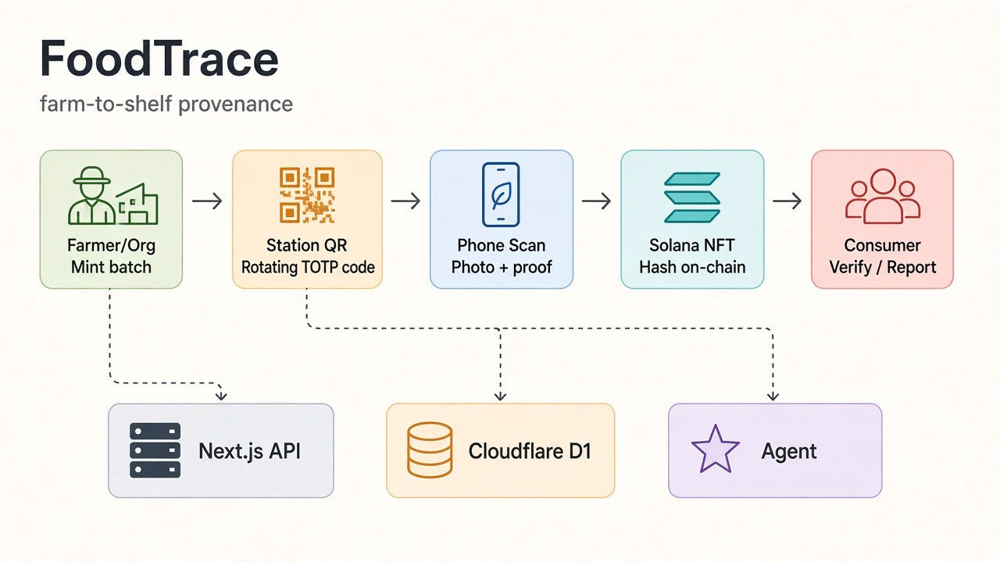
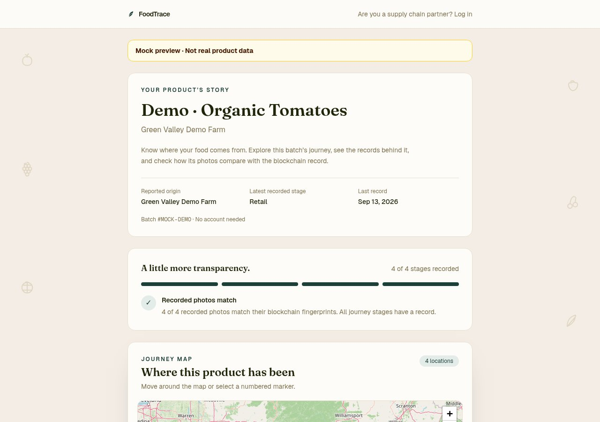

A label that says "organic, from Green Valley Farm" is a claim, and the shopper has no way to check it. Supply chain records usually live in each company's own database, so anyone along the chain can edit their part after the fact. FoodTrace tries to make three things checkable by anyone holding the product:

A farmer org logs in, names the product, and sets a location. The server mints a Metaplex Core NFT on Solana (devnet) for the batch. Its on-chain Attributes plugin starts with the batch ID, origin and creation time. The app prints a product QR code that points at the batch.
Every stage has a station screen (/station/1 to /station/4) showing a QR code that
changes every 90 seconds. The code is a TOTP-style HMAC: HMAC-SHA256(secret, "stage:counter"),
where the counter is the current 90-second window, truncated to 8 hex characters. The server accepts the current
window and one on either side, to allow for clock drift and a slow scan, and compares codes in constant time.
A code is only valid for a few minutes, so a photo of the QR taken last week is useless. To record a stage, you have to be standing in front of the station screen. It's a cheap proof of presence with no special hardware.
On their phone, a worker at the next org scans the station QR, then the product QR, then takes a photo of the shipment. Before submitting, a vision model checks the photo plausibly shows the claimed produce, even in boxes or crates. A hash only proves a photo hasn't been edited; it says nothing about what's in the frame.
The server then checks, in order:
If everything passes, the server computes sha256 of the photo bytes. It also takes a snapshot of the org as it is
at that moment: role, certifications, location, and role-specific details like farming practice or refrigeration
type. The server hashes that snapshot too. The photo goes to Cloudflare R2 and the row to Cloudflare D1.
The server appends an attribute to the batch NFT: stage:N = photoHash|timestamp|actor|snapshotHash.
The NFT becomes an append-only log of the batch's journey. The server refuses to write a stage that's already
on-chain, so a later edit shows up as a mismatch rather than a quiet overwrite.
Solana confirmation from a Cloudflare Worker can take long enough that the transaction's blockhash expires first. So the submit returns immediately with a "pending" stage, and the chain write runs in the background. It retries with a fresh blockhash if it expires. If a retry fails but the attribute turns out to be on-chain anyway (the transaction landed before the confirmation timed out), it counts as a success.
Scanning the product QR opens a public /verify/<batch> page, with no account needed. For each stage it:
If someone swaps a photo or edits a certification in the database, the hashes stop matching and the badge flips. The page also draws the batch's route on a journey map from the recorded locations, and links each stage to its transaction on a Solana explorer.

Each batch also gets a shareable product report. A tool-calling agent (Vercel AI SDK, IFM's K2 model) reads the batch, stages, org profiles and on-chain attributes through read-only tools. It then writes a schema-checked JSON report (Zod): a consumer-friendly origin story and journey, plus an auditor appendix with every hash and transaction. The prompt forbids inventing stages, orgs or hashes.
Reports are cached in D1 under a sha256 fingerprint of their inputs. The fingerprint covers only public
fields, and tests check that secret org fields never enter it. A report is regenerated only when the batch
actually changes. Generation streams the agent's tool calls to the page as it runs, so you can watch it work.
main.My main contribution was the org and permissions layer:
Teammates built the D1/R2 migration, the Cloudflare deploy, the Solana retry and recovery logic, the report agent, the customer journey map, and the photo validation.